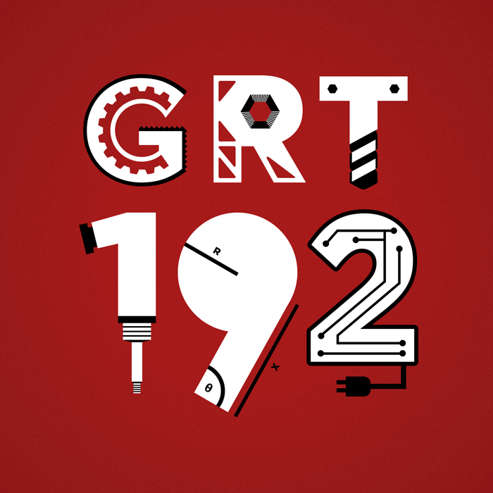
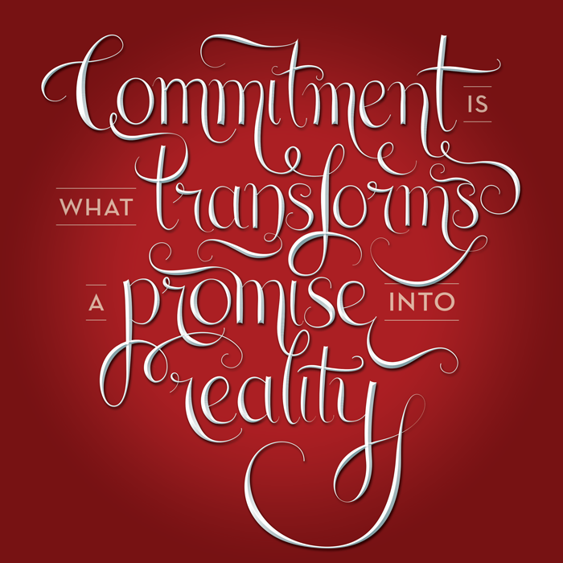
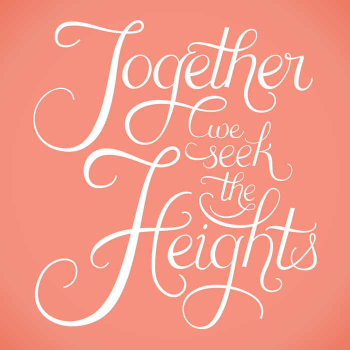

I've done several lettering projects for printed pieces and student organization advertisements. Here are some pieces from the last 3 years.
I created an alphabet with Julia Larrabe that used newspaper and scissors (our only tool) to explore how letterforms are constructed and perceived.
Each letter is two pieces from different characters: the Q is made with an sans-serif 'o' and didone 'R', the 'Y' made with a blackletter 'h' from a newspaper masthead and a condensed sans-serif 'G'. We named our constructed typeface "Ransom", since the style is very reminiscent of stereotypical ransom-note writing. The colors and combinations of different typographic styles within each character make it a more cheerful and inventive use of cut-and-paste news type. (Fall 2013)

This illustrative lettering project was for my high school robotics team (the Gunn Robotics Team, or team 192), and the design was used for our team t-shirts as well as small pin buttons we handed out during regional competition events.
Each letter was intended to illustrate a technical subgroup/area of expertise within our team, or showcase a particular design feature of our robot. The G and R show aspects of the drivetrain wheels and frame of the robot, respectively; the T illustrates a drill bit, since our team machines all our parts ourselves; the 1 shows a pneumatic actuator, to represent our pneumatics team; the 9 represents our CAD team; the 2 represents our controls and programming team. (Spring 2011)

This bit of lettering (using a quote from an old Shearson Lehman/American Express advertisement) was used in a promotional poster for CMU's second annual spring hackathon—Tartanhacks, put on by the organization ScottyLabs. (I also mentored during the hackathon and have worked with ScottyLabs to present several workshops.) (Spring 2013)

I was given the task of lettering a quote to be used for bid night tanks for the Alpha Chi Omega chapter at CMU. Bid night is one of the most memorable events during the formal member recruitment process for Panhellenic sororites, and each sorority will design and print bid night shirts to give to the new members and current sisters. Our bid night theme was 'Sweets and Treats' (with the colors coral and teal), so the design needed to stay consistent with that. I went for a fairly loose, scripty style, with words flowing through extended swashes into one another. The lettering paraphrases our motto—"Together let us seek the heights". (Fall 2013)
- Years 2011–2014
- For Student organizations and studio courses